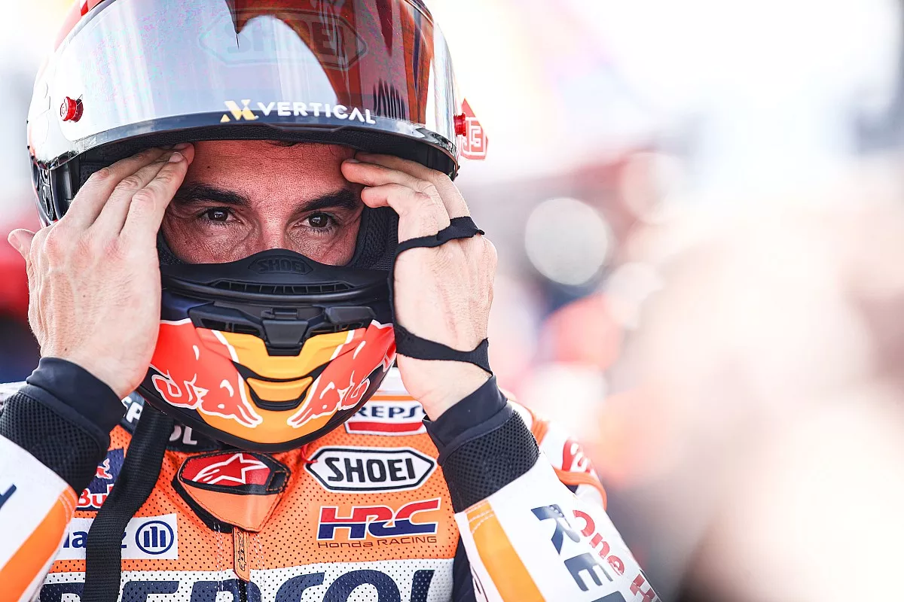
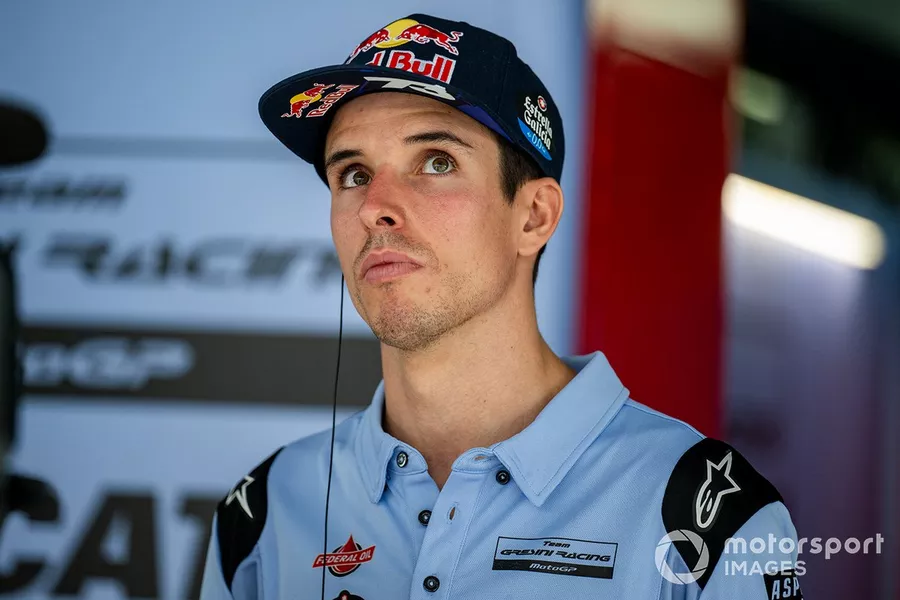

MotoGP: Marc Márquez vai se aposentar se ida à Gresini não lhe trouxer felicidade, diz seu irmão Álex
Espanhol não teve o melhor final de semana na Indonésia, com quedas nas corridas do sábado e do domingo
No final de 2023, o mercado da MotoGP terá uma reviravolta que era vista como impossível no começo do ano, com a saída de Marc Márquez da Honda para correr pela Gresini Ducati. E segundo o irmão de Marc, Álex, que será seu companheiro novamente em 2024, o espanhol deve se aposentar da categoria caso não redescubra a felicidade de correr na equipe italiana. A decisão de Márquez de correr com uma Ducati do ano anterior, encerrando seu contrato com a Honda um ano antes do esperado, vem em meio a um momento difícil para a montadora japonesa. O espanhol assinou um contrato de apenas um ano com a Gresini, dizendo no último fim de semana que a manobra vem para descobrir se ainda sente prazer ao guiar uma moto da MotoGP. Falando com a TNT Sport, Álex Márquez admitiu que seu irmão vai considerar a aposentadoria no fim de 2024 caso ainda não se sinta feliz correndo - mas ele acredita que todas as dúvidas vão desaparecer após seu primeiro contato com a Ducati, no teste pós-temporada de Valência em novembro. "É o que ele disse, ele terá esse ano para descobrir se ainda gosta desse mundo", disse Álex, que perdeu o GP da Indonésia devido às dores na costela pelo acidente na etapa anterior. "Ele é muito aberto comigo, e ele me disse 'ok, se eu não curtir, me aposento'". "É uma possibilidade. Ele quer ver se ainda está curtindo, se ainda pode ser rápido após a lesão. Não tenho dúvidas quanto a isso, mas ele tem. Ele tem todos os motivos do mundo para tê-las, porque eu tive isso com a moto da Honda no ano passado". "Mas tenho certeza de que, em Valência, ele já vai estar curtindo após um dia e a maioria dessas dúvidas vão desaparecer rapidamente".
Marc teve um fim de semana difícil na Indonésia, caindo em ambas as provas de Mandalika, aumentando seu total de quedas na temporada para 2023, deixando ainda mais claro os motivos por trás de sua decisão de abandonar a RC213V em 2024. Falando com a DAZN após o GP, Márquez disse: "Não vai demorar muito [para a temporada acabar]. Quero pedir desculpas à equipe, esse fim de semana fomos de muito para pouco, sendo que normalmente é o contrário". "Agora o momento é de dar um passo atrás. Nas últimas corridas, a partir da Índia, parecia que estávamos mais à frente. Você se encoraja, se vê mais com os ponteiros e isso faz você perder a referência. Agora temos que voltar à mentalidade de Silverstone e Montmelo, dar aquele passo atrás para terminar as corridas".